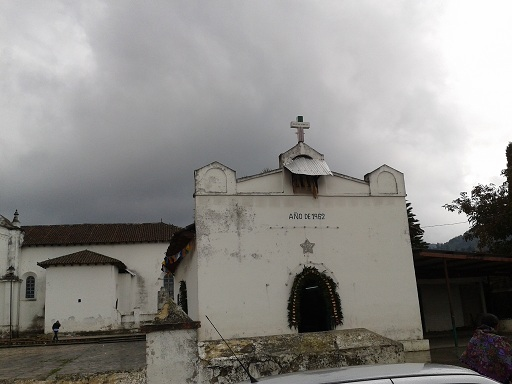
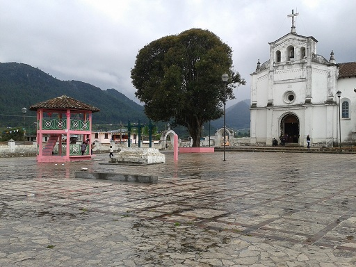
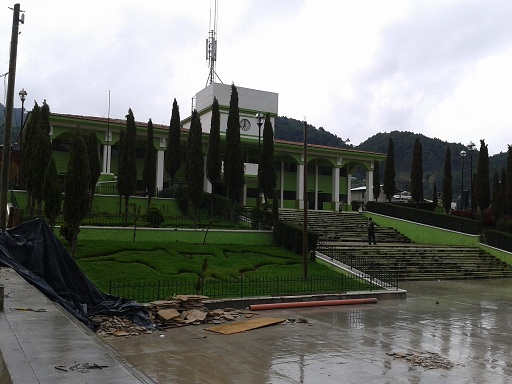
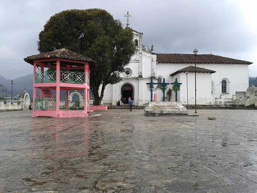
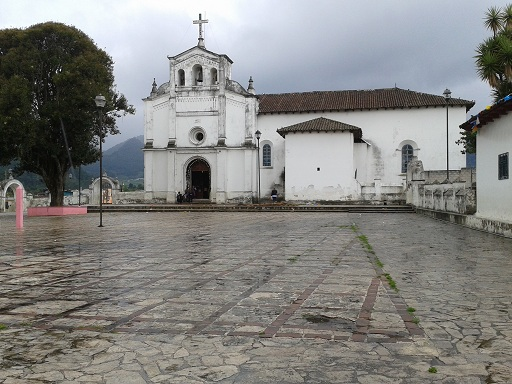
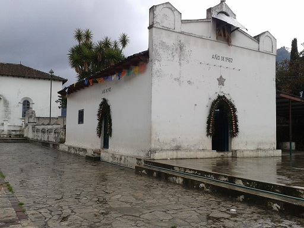

O bien llamado “Lugar de Murciélagos” Sus coloridos paisajes hacen de Zinacantan uno de las comunidades más fotografiadas, los habitantes son personas trabajadoras; cultivan hortalizas para consumo interno.
Zinacantan resalta por el colorido de sus artesanías, de la elaboración de textiles hasta lo que está hecho a barro.
Se localiza a 10 kilometros de San Cristobal de las Casas.
Partiendo de San Cristóbal de las Casas:
Ubíquese al este en Las Gladiolas hacia Las Gardenias – gire a la izquierda con dirección a Las Gardenias – gire en la tercera a la izquierda en Alcatraces- a la izquierda con dirección a Av. Chenalhó/Puebla – siga en esa dirección – seguido gire a la derecha hacia Av. Ramón Larraínzar – continúe por Chamula – hasta toparse con un desvió hacia Zinacantán.
Podrá realizar actividades al patrimonio cultural; admirar la bella artesanía y comprar si así lo desea. Podrá practicar el etnoturismo. Cabe recalcar que está prohibido tomar fotografías dentro y fuera de los templos.






posicione el mouse sobre las imágenes